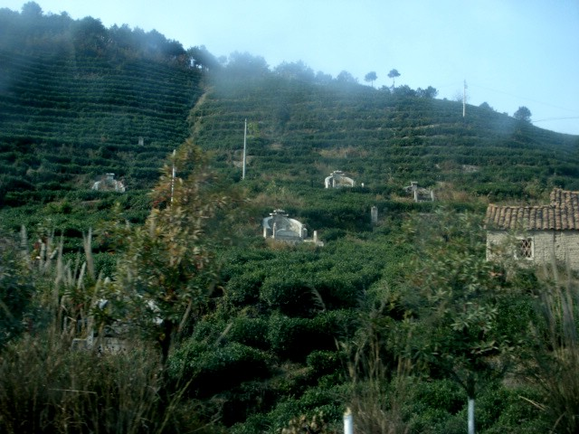

The grave site is to be inset into a small rise or hill, and a mountain side is the ultimate in desirability
Chinese graves face south.
| GO TO PAGE 2 OF 3 | BACK TO DATE PAGE | |||||||||||||||||
| Grave Sites | ||||||||||||||||||
| The position and orientation of grave sites of ancestors is considered to affect the lives of the living descendants. The grave site is to be inset into a small rise or hill, and a mountain side is the ultimate in desirability Chinese graves face south. |
||||||||||||||||||
| On Chinese compasses (and the Chinese invented the compass), the needle points south, not north. In other words, they use the opposite end of the magnetic needle than we do. | ||||||||||||||||||
| If guarded on both sides by arms, Chinese graves look much like armchairs. | ||||||||||||||||||
|  | ||||||||||||||||||
| I took these pictures through bus windows while barreling down the highway, so please bear with me. | GO TO PAGE 2 OF 3 | BACK TO DATE PAGE | ||||||||||||||||